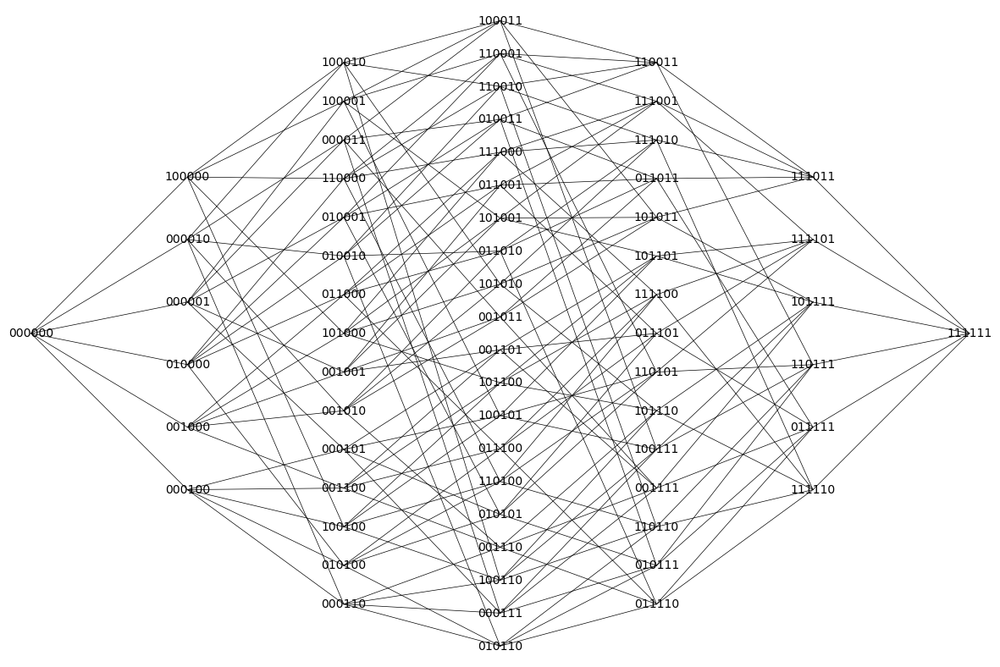
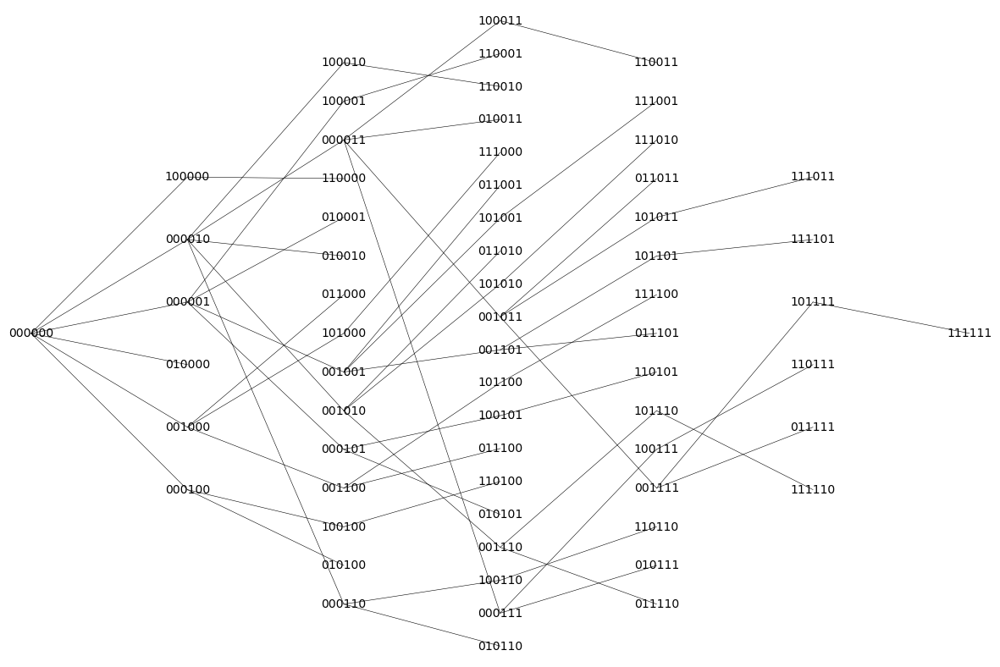

plotting hypercube graphs#
n=6
g = graphs.CubeGraph(n, embedding=2)
g.show(figsize=[12,12],vertex_labels=True, vertex_size=0,vertex_color='white',edge_thickness=0.5)

(BFSVertexList,BFSTree) = g.lex_BFS(tree=True,initial_vertex="0" * n)
BFSTree = BFSTree.to_undirected()
BFSTree.show(figsize=[12,12], vertex_labels=True,
vertex_size=0, vertex_color='white', edge_thickness=0.4, pos=g.get_pos())
print(BFSVertexList)
d = dict((BFSVertexList[i],i) for i in range(len(BFSVertexList)))
print(d)

['000000', '010000', '100000', '000100', '001000', '000001', '000010', '110000', '010100', '011000', '010001', '010010', '100100', '101000', '100001', '100010', '001100', '000101', '000110', '001001', '001010', '000011', '110100', '111000', '110001', '110010', '011100', '010101', '010110', '011001', '011010', '010011', '101100', '100101', '100110', '101001', '101010', '100011', '001101', '001110', '000111', '001011', '111100', '110101', '110110', '111001', '111010', '110011', '011101', '011110', '010111', '011011', '101101', '101110', '100111', '101011', '001111', '111101', '111110', '110111', '111011', '011111', '101111', '111111']
{'000000': 0, '010000': 1, '100000': 2, '000100': 3, '001000': 4, '000001': 5, '000010': 6, '110000': 7, '010100': 8, '011000': 9, '010001': 10, '010010': 11, '100100': 12, '101000': 13, '100001': 14, '100010': 15, '001100': 16, '000101': 17, '000110': 18, '001001': 19, '001010': 20, '000011': 21, '110100': 22, '111000': 23, '110001': 24, '110010': 25, '011100': 26, '010101': 27, '010110': 28, '011001': 29, '011010': 30, '010011': 31, '101100': 32, '100101': 33, '100110': 34, '101001': 35, '101010': 36, '100011': 37, '001101': 38, '001110': 39, '000111': 40, '001011': 41, '111100': 42, '110101': 43, '110110': 44, '111001': 45, '111010': 46, '110011': 47, '011101': 48, '011110': 49, '010111': 50, '011011': 51, '101101': 52, '101110': 53, '100111': 54, '101011': 55, '001111': 56, '111101': 57, '111110': 58, '110111': 59, '111011': 60, '011111': 61, '101111': 62, '111111': 63}
binary_string = "101010" # Replace this with your binary string
binary_list = [int(bit) for bit in binary_string]
print(binary_list)
[1, 0, 1, 0, 1, 0]